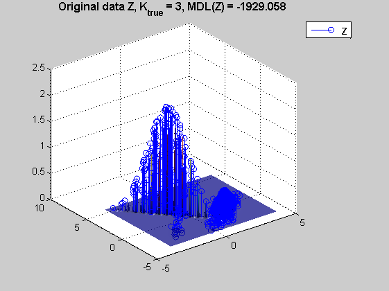
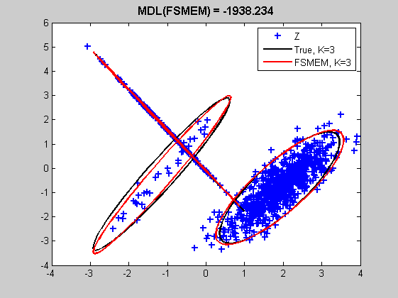
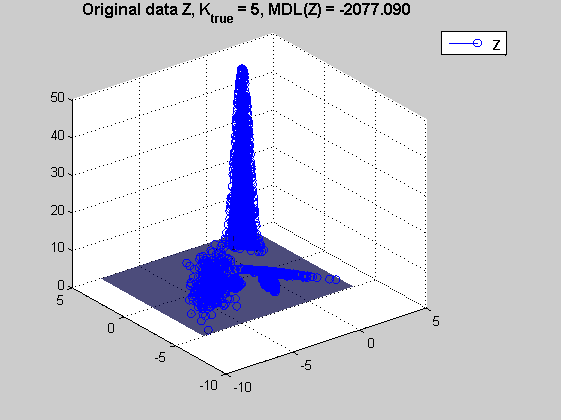
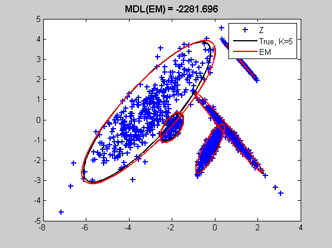
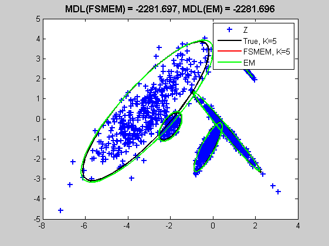
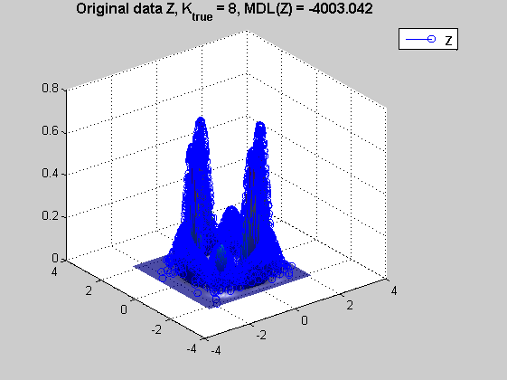
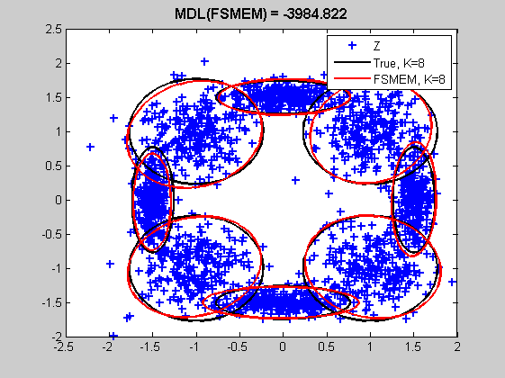
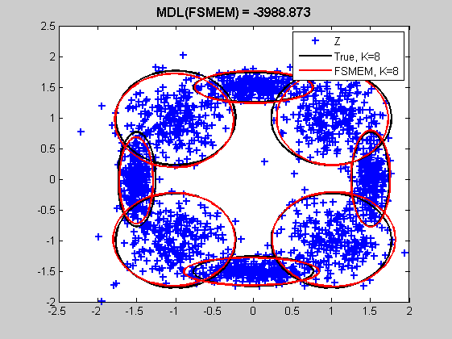
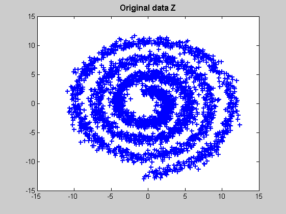
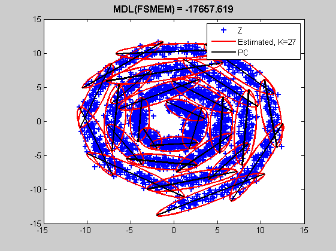

Contents
clear, clc, close all hidden
First Example %%
disp(sprintf('First example of FSMEM : Fit a MVGM with default parameters\n'))
disp(sprintf('Calling FSMEM with the data Z only, without knowing number of compounds \n'))
First example of FSMEM : Fit a MVGM with default parameters
Calling FSMEM with the data Z only, without knowing number of compounds
Generate MVGM %%
d = 2;
N = 1000;
K_true = 3;
clust_spread = 0.5;
[M_true , S_true , P_true] = gene_mvgm(d , K_true , clust_spread);
Z = sample_mvgm(N , M_true , S_true , P_true);
logl_true = loglike_mvgm(Z , M_true , S_true , P_true);
mdl_true = logl_true - 0.5*log(N)*K_true*((d+1) + d*((d+1))/2);
Display Orignal data %%
offsetmin = [1.1 ; 0.9];
offsetmax = [0.9 ; 1.1];
pdf_true = pdf_mvgm(Z , M_true , S_true , P_true);
minZ = min(Z , [] , 2);
maxZ = max(Z , [] , 2);
minZ = minZ.*offsetmin((sign(minZ) > 0)+1);
maxZ = maxZ.*offsetmax((sign(maxZ) > 0)+1);
vectx = minZ(1):0.1:maxZ(1);
vecty = minZ(2):0.1:maxZ(2);
[X , Y] = meshgrid(vectx , vecty);
grid = [X(:) , Y(:)]';
pdf_support = pdf_mvgm(grid , M_true , S_true , P_true);
figure(1)
set(gcf , 'renderer' , 'opengl');
g = surfc(X , Y , reshape(pdf_support , length(vecty) , length(vectx)));
alpha(g , 0.7);
hold on
h = stem3(Z(1 , :) , Z(2 , :) , pdf_true);
hold off
shading interp
lighting phong
light
legend(h , '\bf{Z}')
title(sprintf('Original data Z, K_{true} = %d, MDL(Z) = %8.3f' , K_true , mdl_true) , 'fontsize' , 12 , 'fontweight' , 'bold');
rotate3d on
drawnow

FSMEM with unknown number of clusters %%
disp(sprintf('tic,[logl , Mest , Sest , Pest] = fsmem_mvgm(Z);,toc;\n'))
tic,[logl , Mest , Sest , Pest] = fsmem_mvgm(Z);,toc;
K_est = size(Mest , 3);
tic,[logl , Mest , Sest , Pest] = fsmem_mvgm(Z);,toc;
Elapsed time is 0.124514 seconds.
Display Results %%
[x_true , y_true] = ndellipse(M_true , S_true);
[x_est , y_est] = ndellipse(Mest , Sest);
figure(2)
h = plot(Z(1 , :) , Z(2 , :) , '+' , x_true , y_true , 'k' , x_est , y_est , 'r' , 'linewidth' , 2);
legend([h(1), h(2) , h(2+K_true)] , 'Z' , sprintf('True, K=%d' , K_true),sprintf('FSMEM, K=%d' , K_est))
title(sprintf('MDL(FSMEM) = %8.3f' , logl(1 , end)) , 'fontsize' , 12 , 'fontweight' , 'bold');
disp(sprintf('\nK_true = %d , K_est = %d\n' , K_true , K_est))
disp(sprintf('pause\n'))
pause
K_true = 3 , K_est = 3
pause

Second Example %%
disp(sprintf('Second example of FSMEM : Fit a MVGM with default parameters & compare with the classical EM\n'))
disp(sprintf('Calling FSMEM with the data Z only, without knowing number of compounds \n'))
Second example of FSMEM : Fit a MVGM with default parameters & compare with the classical EM
Calling FSMEM with the data Z only, without knowing number of compounds
Generate MVGM %%
d = 2;
N = 1500;
K_true = 5;
clust_spread = 0.5;
[M_true , S_true , P_true] = gene_mvgm(d , K_true , clust_spread);
Z = sample_mvgm(N , M_true , S_true , P_true);
logl_true = loglike_mvgm(Z , M_true , S_true , P_true);
mdl_true = logl_true - 0.5*log(N)*K_true*((d+1) + d*((d+1))/2);
Display Orignal data %%
offsetmin = [1.1 ; 0.9];
offsetmax = [0.9 ; 1.1];
pdf_true = pdf_mvgm(Z , M_true , S_true , P_true);
minZ = min(Z , [] , 2);
maxZ = max(Z , [] , 2);
minZ = minZ.*offsetmin((sign(minZ) > 0)+1);
maxZ = maxZ.*offsetmax((sign(maxZ) > 0)+1);
vectx = minZ(1):0.1:maxZ(1);
vecty = minZ(2):0.1:maxZ(2);
[X , Y] = meshgrid(vectx , vecty);
grid = [X(:) , Y(:)]';
pdf_support = pdf_mvgm(grid , M_true , S_true , P_true);
figure(1)
set(gcf , 'renderer' , 'opengl');
g = surfc(X , Y , reshape(pdf_support , length(vecty) , length(vectx)));
alpha(g , 0.7);
hold on
h = stem3(Z(1 , :) , Z(2 , :) , pdf_true);
hold off
shading interp
lighting phong
light
legend(h , '\bf{Z}')
title(sprintf('Original data Z, K_{true} = %d, MDL(Z) = %8.3f' , K_true , mdl_true) , 'fontsize' , 12 , 'fontweight' , 'bold');
rotate3d on
drawnow

FSMEM with unknown number of clusters %%
disp(sprintf('tic,[logl , Mest , Sest , Pest] = fsmem_mvgm(Z);,toc;\n'))
tic,[logl , Mest , Sest , Pest] = fsmem_mvgm(Z);,toc;
K_est = size(Mest , 3);
tic,[logl , Mest , Sest , Pest] = fsmem_mvgm(Z);,toc;
Elapsed time is 0.665392 seconds.
Full EM with known number of clusters %%
disp(sprintf('Calling FSMEM with flag fail_exit = 0 in the options structure run a single Full EM \n'))
disp(sprintf('\noptions.Kini = K_true;\noptions.fail_exit = 0.0;\ntic,[logl , Mest , Sest , Pest] = fsmem_mvgm(Z , [] , [] , [] , options);,toc;\n'))
options.Kini = K_true;
options.fail_exit = 0.0;
tic,[loglem , Mestem , Sestem , Pestem] = fsmem_mvgm(Z , [] , [], [] , options);,toc
Calling FSMEM with flag fail_exit = 0 in the options structure run a single Full EM
options.Kini = K_true;
options.fail_exit = 0.0;
tic,[logl , Mest , Sest , Pest] = fsmem_mvgm(Z , [] , [] , [] , options);,toc;
Elapsed time is 0.074991 seconds.
Display Results %%
[x_true , y_true] = ndellipse(M_true , S_true);
[x_est , y_est] = ndellipse(Mest , Sest);
[x_estem , y_estem] = ndellipse(Mestem , Sestem);
figure(2)
h = plot(Z(1 , :) , Z(2 , :) , '+' , x_true , y_true , 'k' , x_est , y_est , 'r' , 'linewidth' , 2);
legend([h(1), h(2) , h(2+K_true)] , 'Z' , sprintf('True, K=%d' , K_true),sprintf('FSMEM, K=%d' , K_est))
title(sprintf('MDL(FSMEM) = %8.3f' , logl(1 , end)) , 'fontsize' , 12 , 'fontweight' , 'bold');
figure(3)
h = plot(Z(1 , :) , Z(2 , :) , '+' , x_true , y_true , 'k' , x_estem , y_estem , 'r' , 'linewidth' , 2);
legend([h(1), h(2) , h(2+K_true)] , 'Z' , sprintf('True, K=%d' , K_true), 'EM')
title(sprintf('MDL(EM) = %8.3f' , loglem(1 , end)) , 'fontsize' , 12 , 'fontweight' , 'bold');
figure(4)
h = plot(Z(1 , :) , Z(2 , :) , '+' , x_true , y_true , 'k' , x_est , y_est , 'r' , x_estem , y_estem , 'g', 'linewidth' , 2);
legend([h(1), h(2) , h(2+K_true) , h(2+K_true + K_est)] , 'Z' , sprintf('True, K=%d' , K_true),sprintf('FSMEM, K=%d' , K_est) , 'EM')
title(sprintf('MDL(FSMEM) = %8.3f, MDL(EM) = %8.3f' , logl(1 , end) , loglem(1 , end)) , 'fontsize' , 12 , 'fontweight' , 'bold');
pause
 
Third Example %%
disp(sprintf('Third example of FSMEM : Fit a Elliptical MVGM with a given initial MVGM\n'))
disp(sprintf('Calling FSMEM with the data Z only, without knowing number of compounds \n'))
Third example of FSMEM : Fit a Elliptical MVGM with a given initial MVGM
Calling FSMEM with the data Z only, without knowing number of compounds
Generate MVGM %%
d = 2;
N = 2000;
K_true = 8;
P_true = permute((1/K_true)*ones(1 , K_true) , [1 3 2]);
M_true = permute([1.5 , 1 , 0 , -1 , -1.5 , -1 , 0 , 1 ; 0 1 , 1.5 , 1 , 0 , -1 , -1.5 , -1] , [1 3 2]);
S_true = cat(3 , diag([0.01 , 0.1]) , diag([0.1 , 0.1]) , diag([0.1 , 0.01]) , diag([0.1 , 0.1]) , diag([0.01 , 0.1]) , diag([0.1 , 0.1]) , diag([0.1 , 0.01]) , diag([0.1 , 0.1]));
Z = sample_mvgm(N , M_true , S_true , P_true);
logl_true = loglike_mvgm(Z , M_true , S_true , P_true);
mdl_true = logl_true - 0.5*log(N)*K_true*((d+1) + d*((d+1))/2);
Display Orignal data %%
offsetmin = [1.1 ; 0.9];
offsetmax = [0.9 ; 1.1];
pdf_true = pdf_mvgm(Z , M_true , S_true , P_true);
minZ = min(Z , [] , 2);
maxZ = max(Z , [] , 2);
minZ = minZ.*offsetmin((sign(minZ) > 0)+1);
maxZ = maxZ.*offsetmax((sign(maxZ) > 0)+1);
vectx = minZ(1):0.1:maxZ(1);
vecty = minZ(2):0.1:maxZ(2);
[X , Y] = meshgrid(vectx , vecty);
grid = [X(:) , Y(:)]';
pdf_support = pdf_mvgm(grid , M_true , S_true , P_true);
figure(1)
set(gcf , 'renderer' , 'opengl');
g = surfc(X , Y , reshape(pdf_support , length(vecty) , length(vectx)));
alpha(g , 0.7);
hold on
h = stem3(Z(1 , :) , Z(2 , :) , pdf_true);
hold off
shading interp
lighting phong
light
legend(h , '\bf{Z}')
title(sprintf('Original data Z, K_{true} = %d, MDL(Z) = %8.3f' , K_true , mdl_true) , 'fontsize' , 12 , 'fontweight' , 'bold');
rotate3d on

FSMEM with unknown number of clusters and initial parameters%%
disp(sprintf('tic,[logl , Mest , Sest , Pest] = fsmem_mvgm(Z , M_ini , S_ini , P_ini);,toc;\n'))
disp(sprintf('where K_ini clusters <> K_true are supposed for the initial parameter (M_ini , S_ini , P_ini)\n'))
disp(sprintf('Covariances by default are supposed to be full\n'))
K_ini = 3;
[M_ini , S_ini , P_ini] = init_mvgm(Z , K_ini);
tic,[logl , Mest , Sest , Pest] = fsmem_mvgm(Z , M_ini , S_ini , P_ini);,toc;
K_est = size(Mest , 3);
tic,[logl , Mest , Sest , Pest] = fsmem_mvgm(Z , M_ini , S_ini , P_ini);,toc;
where K_ini clusters <> K_true are supposed for the initial parameter (M_ini , S_ini , P_ini)
Covariances by default are supposed to be full
Elapsed time is 1.632499 seconds.
Display Results %%
[x_true , y_true] = ndellipse(M_true , S_true);
[x_est , y_est] = ndellipse(Mest , Sest);
figure(2)
h = plot(Z(1 , :) , Z(2 , :) , '+' , x_true , y_true , 'k' , x_est , y_est , 'r' , 'linewidth' , 2);
legend([h(1), h(2) , h(2+K_true)] , 'Z' , sprintf('True, K=%d' , K_true),sprintf('FSMEM, K=%d' , K_est))
title(sprintf('MDL(FSMEM) = %8.3f' , logl(1 , end)) , 'fontsize' , 12 , 'fontweight' , 'bold');

FSMEM with unknown number of clusters and initial parameters%%
disp(sprintf('\noptions.covtype = 1;\ntic,[logl , Mest , Sest , Pest] = fsmem_mvgm(Z , M_ini , S_ini , P_ini , options);,toc;\n'))
disp(sprintf('Here covariances are supposed to be elliptical\n'))
clear options
options.covtype = 1;
tic,[logl1 , Mest1 , Sest1 , Pest1] = fsmem_mvgm(Z , M_ini , S_ini , P_ini , options);,toc;
K_est1 = size(Mest1 , 3);
options.covtype = 1;
tic,[logl , Mest , Sest , Pest] = fsmem_mvgm(Z , M_ini , S_ini , P_ini , options);,toc;
Here covariances are supposed to be elliptical
Elapsed time is 1.621794 seconds.
Display Results %%
[x_true , y_true] = ndellipse(M_true , S_true);
[x_est1 , y_est1] = ndellipse(Mest1 , Sest1);
figure(3)
h = plot(Z(1 , :) , Z(2 , :) , '+' , x_true , y_true , 'k' , x_est1 , y_est1 , 'r' , 'linewidth' , 2);
legend([h(1), h(2) , h(2+K_true)] , 'Z' , sprintf('True, K=%d' , K_true),sprintf('FSMEM, K=%d' , K_est1))
title(sprintf('MDL(FSMEM) = %8.3f' , logl1(1 , end)) , 'fontsize' , 12 , 'fontweight' , 'bold');
pause

Fourth Example %%
disp(sprintf('\nFourth example of FSMEM : Fit spiral data\n'))
disp(sprintf('Calling FSMEM with special hyperparameters in options structure (a bit long even with the mex-file)\n'))
Fourth example of FSMEM : Fit spiral data
Calling FSMEM with special hyperparameters in options structure (a bit long even with the mex-file)
Generate Spiral data %%
N = 3000;
options.Kini = 20;
options.Kmax = 40;
options.maxite_fullem = 500;
options.maxite_partialem = 500;
options.epsi_fullem = 1e-7;
options.epsi_partialem = 1e-7;
options.maxcands_split = 12;
options.maxcands_merge = 12;
options.covtype = 0;
Z = spiral2d(N);
Display Orignal data %%
figure(1)
plot(Z(1 , :) , Z(2 , :) , '+', 'linewidth' , 2)
title('Original data Z' , 'fontsize' , 12 , 'fontweight' , 'bold');
drawnow

FSMEM with unknown number of clusters %%
disp(sprintf('tic,[logl , Mest , Sest , Pest] = fsmem_mvgm(Z , [] , [] , [] , options);,toc;\n'))
tic,[logl , Mest , Sest , Pest] = fsmem_mvgm(Z , [] , [] , [] , options);,toc
K_est = size(Pest , 3);
tic,[logl , Mest , Sest , Pest] = fsmem_mvgm(Z , [] , [] , [] , options);,toc;
Elapsed time is 62.375204 seconds.
Display Results %%
figure(2)
[xest , yest] = ndellipse(Mest , Sest);
[xaxes , yaxes] = ndellipse(Mest , Sest , [] , [] , 3);
xaxes(end , :) = [];
yaxes(end , :) = [];
h = plot(Z(1 , :) , Z(2 , :) , '+' , xest , yest , 'r' , xaxes , yaxes , 'k', 'linewidth' , 2);
legend([h(1), h(2) , h(2+K_est)] , 'Z' , sprintf('Estimated, K=%d' , K_est) , 'PC');
title(sprintf('MDL(FSMEM) = %8.3f' , logl(1 , end)) , 'fontsize' , 12 , 'fontweight' , 'bold');
